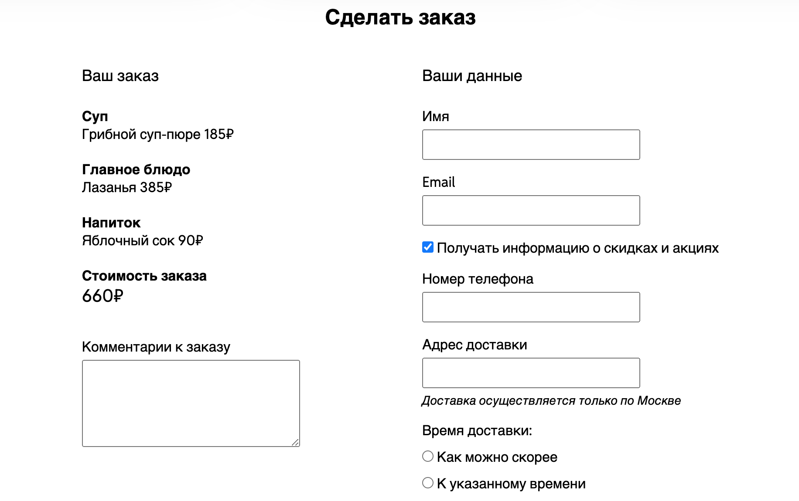
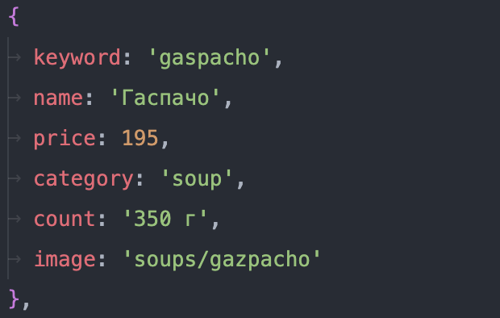
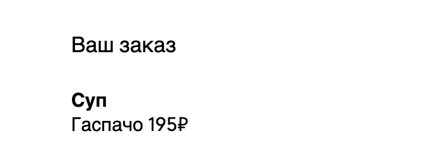
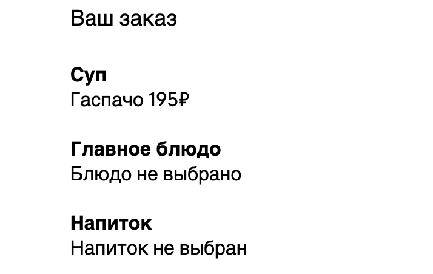
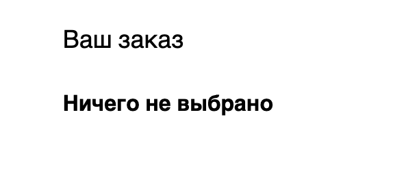
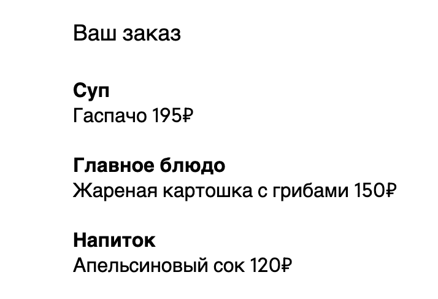
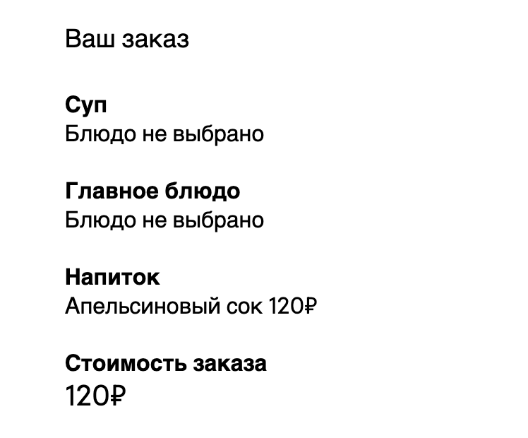
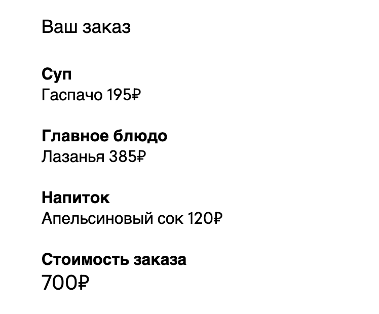
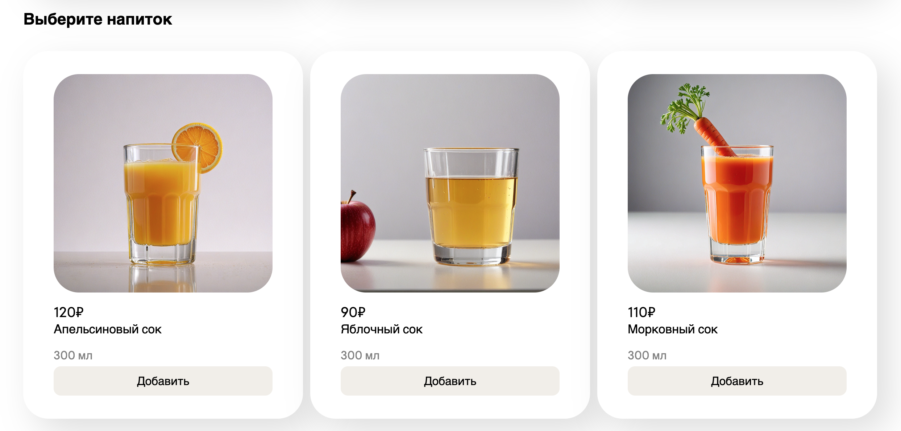
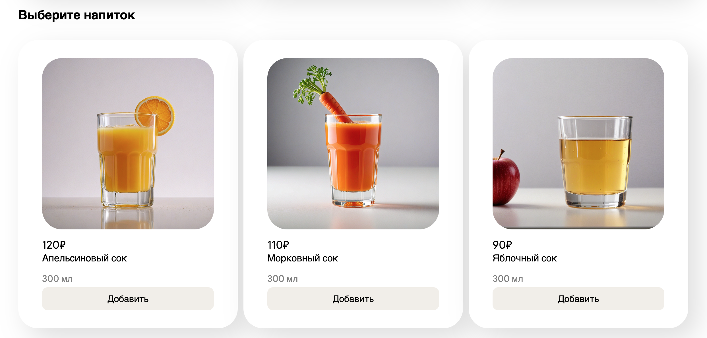

Отобразите блюда на странице с помощью JavaScript. Создайте скрипт, позволяющий выбрать блюдо и добавить его в раздел формы "Ваш заказ". Реализуйте подсчет итоговой стоимости. Отсортируйте блюда в алфавитном порядке.
Порядок выполнения
Примерный макет раздела "Ваш заказ":
Изначально на странице не должно быть элементов с карточками блюд. Необходимо написать скрипт, который будет перебирать массив с блюдами, динамически создавать соответствующие им HTML-элементы, и при помощи DOM добавлять каждый из них в нужную секцию на странице.
1. Создайте массив объектов, в котором будут храниться все существующие блюда. У каждого объекта должны быть следующие свойства:
- keyword (хранит название блюда на латинице, должно быть уникальным для каждого блюда)
- name (название блюда)
- price (цена)
- category (категория на английском, например, "soup")
- count (вес/объем)
- image (путь к изображению, например "soups/gazpacho")
Пример объекта:
Массив должен храниться в отдельном js-файле.
2. Реализуйте отображение блюд на странице с помощью JavaScript.
Необходимо написать скрипт, который будет перебирать массив с блюдами и выводить каждое из них в нужную секцию.
Секции должны выглядеть так же, как при статичном выводе из прошлых лабораторных.
- У каждого блока с блюдом должен быть data-атрибут "data-dish", в котором будет храниться название блюда на латинице.
Скрипт отображения должен храниться в отдельном js-файле.
3. Создайте скрипт, позволяющий выбрать блюдо и добавить его в форму "Сделать заказ".
- При клике на кнопку "Добавить" в карточке с блюдом, его название и цена должны появляться в разделе формы "Ваш заказ". Блюдо
должно отображаться в своей категории. При этом карточка выбранного блюда должна быть выделена при помощи рамки (такой же,
как при наведении указателя мыши).
Используйте data-атрибут, чтобы найти блюдо в массиве.
Например, пользователь выбрал суп "Гаспачо". Вот как должен выглядеть раздел "Ваш заказ":  - Если затем пользователь выбрал другой суп, он должен отобразиться вместо "Гаспачо".
- Если блюдо из одной категории добавлено, а из другой нет, в пустой категории должно быть выведено
сообщение: "Блюдо не выбрано" (или "Напиток не выбран" для раздела с напитками).
Например, пользователь выбрал суп, но не выбрал основное блюдо и напиток:  - Если еще ничего не было выбрано, в блоке должен отображаться текст "Ничего не выбрано" (названия категорий скрыты):  Вот как выглядит блок, если были выбраны блюда из каждой категории: 
4. Реализуйте подсчет итоговой стоимости для всех выбранных позиций меню.
- После блоков с выбранными блюдами должен располагаться блок "Стоимость заказа".
В блоке отображается итоговая стоимость всех блюд. Например, если был выбран только напиток, отобразиться его цена:  - Так выглядит блок, если выбраны блюда из каждой категории: 
- Если блюда не были выбраны, блок "Стоимость заказа" скрыт так же, как и блоки с категориями.
5. Отсортируйте блюда каждой категории в алфавитном порядке.
- Используйте метод sort() перед отображением блюд на страницу. Блюда должны быть отсортированы в алфавитном
порядке.
Например, блок с напитками. До сортировки:  После сортировки: 
Видео
На видео продемонстрировано, как должны работать добавление блюд и подсчет итоговой стоимости:
При отправке формы на сервер должны отправляться названия выбранных блюд на латинице (keyword). Остальные поля формы тоже должны отправляться.
Защита
Чтобы сдать лабораторную, необходимо выполнить все требования.